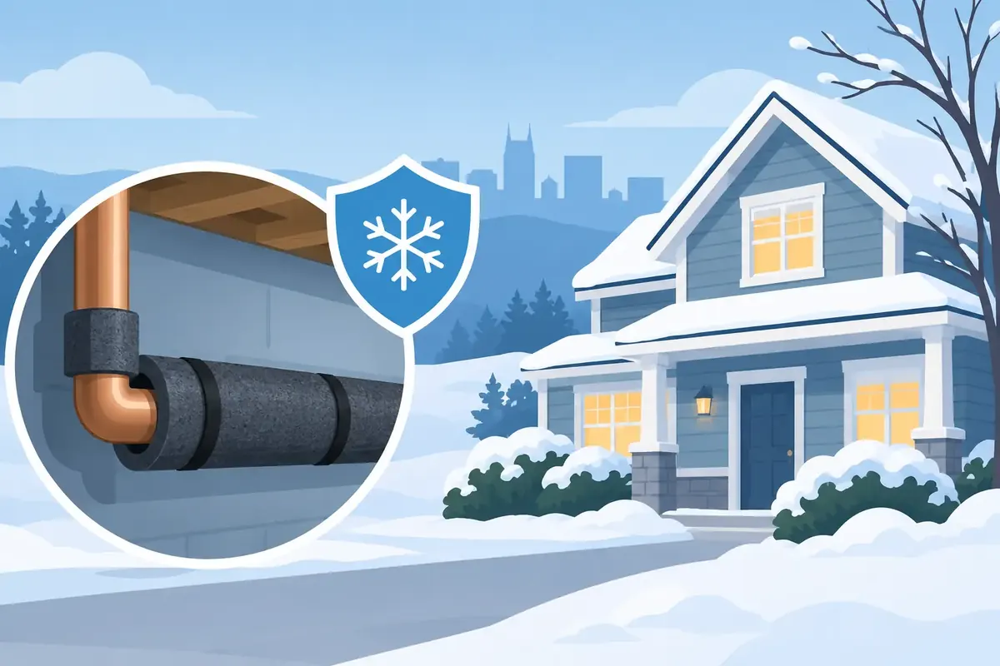

A hard freeze in Murfreesboro can turn a quiet night into a costly plumbing emergency by morning. Frozen pipe prevention is not about overreacting to every cold snap. It is about protecting the vulnerable parts of your plumbing system before trapped water expands, cracks a pipe, and sends water into walls, cabinets, crawl spaces, or business operations.
Middle Tennessee weather can make this easy to overlook. A mild afternoon may follow a night below freezing, and that quick temperature swing gives homeowners a false sense that everything is fine. Pipes can remain frozen long after the air warms up, especially in unheated areas and exterior walls.
Why Pipes Freeze and Why the Damage Can Be Delayed
Water expands as it freezes. When water inside a pipe turns to ice, the blockage creates pressure between the frozen section and a closed faucet or valve. That pressure can split copper, PVC, CPVC, PEX connections, and older galvanized piping.
The pipe does not always burst where the ice forms. It may crack several feet away at a weak fitting, joint, or corroded section. That is why the biggest leak may not appear until the pipe thaws and water begins flowing again.
Pipes at highest risk are usually those exposed to cold air. Think exterior walls, garages, crawl spaces, unfinished basements, attic areas, outdoor hose bibbs, laundry rooms, and cabinets along outside kitchen or bathroom walls. Vacant homes, rental properties, and commercial buildings with reduced weekend occupancy need special attention because there may be no one present to notice a problem early.
Frozen Pipe Prevention Starts Before Freezing Weather
The most dependable protection begins before temperatures drop. Insulation reduces heat loss, but it does not create heat on its own. It works best when combined with sealed openings, consistent indoor temperatures, and attention to known cold spots.
Start outdoors. Disconnect garden hoses from exterior faucets, drain them, and store them for the season. A connected hose can trap water at the hose bibb and allow the freeze to move back toward the home's plumbing. If your property has shutoff valves for exterior faucets, close them and drain the line. Frost-free hose bibbs help, but they can still freeze if a hose remains attached or the faucet is not installed correctly.
Inside, insulate exposed water lines in crawl spaces, garages, and other unconditioned areas. Foam pipe sleeves are useful for accessible pipes, while professionally installed insulation and pipe heat cable may be better choices for recurring trouble spots. Heat cable must be selected and installed correctly. Improper installation can damage piping or create an electrical safety concern, so this is one area where professional guidance is worth having.
Also look for places where cold air reaches your pipes. Gaps around foundation vents, crawl space access doors, plumbing penetrations, dryer vents, and exterior wall openings can let freezing air settle around a water line. Sealing those gaps helps protect plumbing while improving comfort and energy efficiency.
Keep Interior Temperatures Consistent
When a freeze is in the forecast, keep your thermostat set to at least 55 degrees, even when you are away. Lowering the heat too much to save energy can cost far more if a pipe freezes and bursts.
Open interior doors so warm air can circulate through the house. On especially cold nights, open cabinet doors beneath kitchen and bathroom sinks that sit against exterior walls. Keep household cleaners and medications secured away from children and pets before opening cabinets.
For homes with rooms that are rarely used, do not assume the central heating system reaches every plumbing line equally. A closed-off bonus room, basement bathroom, utility closet, or garage apartment may need its own check during freezing conditions.
When Should You Let Faucets Drip?
Letting a faucet drip can be helpful during a sustained hard freeze, especially when that faucet has frozen before or serves pipes in an exterior wall. A small, steady trickle of cold water can relieve pressure and keep water moving through a vulnerable line.
It is not necessary to run every faucet in the building for every chilly night. That wastes water and may not address the actual risk. Focus on known trouble areas, exposed plumbing, and locations with a history of freezing. If both hot and cold lines are vulnerable, run the faucet at a lukewarm setting so each side receives some movement.
For commercial properties, a building-specific plan is better than asking employees to guess which faucets should run. Facility managers should identify at-risk fixtures, assign after-hours checks, and make sure staff know where the main water shutoff is located.
Protect Vacant Homes, Rentals, and Seasonal Buildings
An occupied home gives you an advantage: people hear odd sounds, notice reduced water flow, and see leaks. A vacant home may sit for days after a pipe bursts. That makes winterization and monitoring especially valuable.
If a property will be vacant for an extended period, consider shutting off the main water supply and draining plumbing lines where appropriate. This decision depends on the building, its heating system, fire protection needs, and whether the property must remain operational. A plumber can help determine the safer approach instead of relying on a one-size-fits-all checklist.
Smart water shutoff valves can provide another layer of protection. These devices monitor water use and can alert you to unusual flow. Some can automatically shut off the water when a major leak is detected. They do not prevent every freeze, but they can greatly limit the damage if a pipe does fail.
Landlords should communicate clearly with tenants before cold weather arrives. Tenants need to know to maintain heat, report low water pressure immediately, keep exterior doors closed, and avoid using ovens or unsafe space heaters to warm plumbing areas. For managed properties, documenting winter expectations protects both the building and the people inside it.
Warning Signs a Pipe May Be Freezing
A frozen pipe often gives a warning before it becomes a burst pipe. Reduced or no water flow from one fixture is a common sign, particularly if other faucets still work normally. Frost on exposed piping, strange odors from a drain or faucet, bulging pipe sections, and unusually cold walls or cabinets can also point to a problem.
Do not ignore a suddenly quiet water meter when a fixture is supposed to be running, or a damp spot that appears after temperatures rise. Water damage can be hidden behind drywall, beneath flooring, or inside insulation.
If you suspect a pipe is frozen, leave the affected faucet open. As the ice begins to melt, that open faucet gives water and pressure a place to go. Then locate the main water shutoff valve in case a leak appears during thawing.
What to Do if a Pipe Freezes
Never use an open flame, propane torch, or other high-heat device to thaw a pipe. Flames can damage the pipe, ignite nearby materials, and create a serious safety hazard. Do not use electrical appliances around standing water.
A hair dryer on a low setting, warm towels, or gentle room heat may thaw an accessible pipe safely. Start near the faucet and work slowly toward the suspected frozen section. If you cannot locate the frozen area, if the pipe is inside a wall, or if there is any sign of a crack or active leak, stop and call a plumber.
If a pipe has burst, shut off the main water supply immediately if it is safe to do so. Turn off electricity to affected areas only when you can reach the panel without standing in water. Move belongings away from the leak, document damage for insurance purposes, and arrange professional plumbing repair as soon as possible.
A Professional Check Can Prevent the Next Emergency
Repeated freezing is usually a sign that the underlying issue has not been solved. The answer may be better insulation, sealing an air leak, relocating a line, repairing a failing heat source, upgrading an exterior faucet, or adding a smart shutoff device. The right repair depends on the pipe material, location, age of the building, and how the space is used.
Angle Stop Plumbing helps Middle Tennessee homeowners and property managers identify vulnerable lines, repair freeze damage, and build practical protection into their plumbing maintenance plan. With upfront pricing, respectful service, and 24/7 emergency availability, our team treats every customer like family when winter weather puts their property at risk.
Before the next hard freeze arrives, take a few minutes to find your main shutoff valve, disconnect those hoses, and check the spaces where your pipes are most exposed. That small bit of preparation can preserve far more than plumbing - it can protect the home, business, and peace of mind you work hard to maintain.